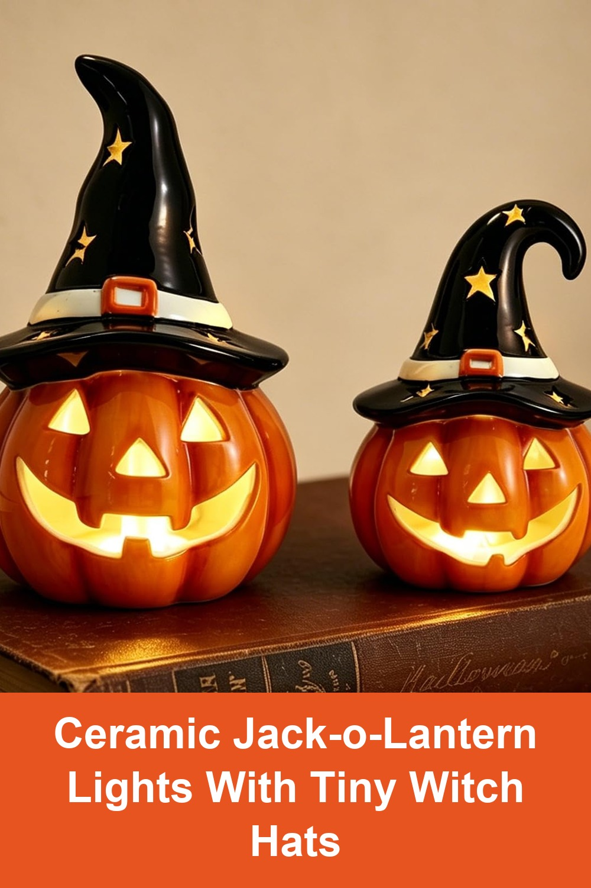
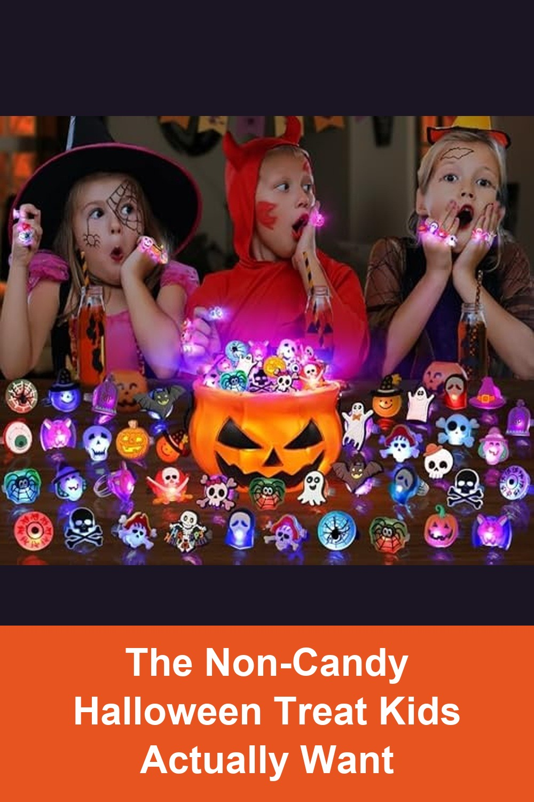

WDS WONDROUS Halloween Pumpkin Lights Decorations, Orange & Black Ceramic Jack O Lantern Pumpkin, Battery Operated LED Light, 2PCS
A set of 2 glossy ceramic pumpkins in mismatched sizes, each topped with a little star-cutout witch hat that glows amber when the built-in LED is on — the kind of cozy tabletop piece that can stay out from September through Halloween night.
I absolutely love these pumpkin lights! The little witch hats make them so cute, and I love how they light up and give such a cozy Halloween glow. They're going to look adorable with the rest of my Halloween decor. I'm really excited to start decorating for Halloween this year!— verified Amazon buyer
View on Amazon →
Halloween Party Favors 50Pcs Trick or Treats Halloween Toys for Kids, Non-Candy Gift Bag Fillers, Light Up Rings
50 flashing LED rings in pumpkin, ghost, skeleton, and spider designs — a non-candy option that still feels like a treat, and a way to keep your porch bowl from running out before 8pm.
Kids loved these. We offered some candy and non candy goodies. These were more popular than the candies for sure. Kids were asking about these all night even after we ran out. Should have bought more of them to hand out. Everyone loved it and parents liked them too.— verified Amazon buyer
View on Amazon →Joiedomi 7 FT Long Halloween Inflatable Pumpkin Outdoor Decoration with Witch's Cat, Built-in LEDs
Seven glowing jack-o-lanterns and a fanged witch's cat, self-inflating with built-in LEDs, stakes, and tethers included — the kind of yard piece neighbors slow down to look at.
Bright and festive. Looks great, orange color is vibrant and LED lights are bright. Very happy with this inflatable!— verified Amazon buyer
View on Amazon →